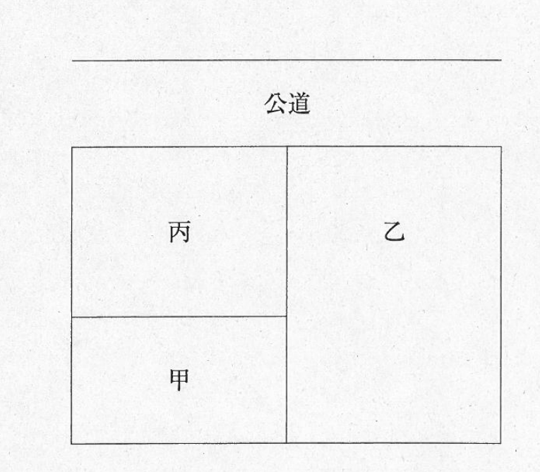

問題文・条件
甲土地、乙土地及び丙土地の位置関係は、下図のとおりであり、甲土地から公道に出るためには、乙土地を通行するより丙土地を通行する方が損害が少ないものとする。公道に至るための他の土地の通行権に関する。
肢 ア
H22-3-ア
Dが丙土地を所有している場合において、Aが所有する一筆の土地を甲土地と乙土地に分筆して、甲土地をBに譲渡し、その後、乙土地をCに譲渡したときは、Bは、乙土地について通行権を主張することができる。

〔図〕
解答：○
分筆で袋地になったときは、残余地しか通れない。残余地が譲渡されても同じ。
分割によって袋地が生じたときは、他の分割者の土地のみを通行できる（民法213条1項）。残余地が第三者に譲渡された後も、この通行権は残る（最判平2.11.20）。
根拠民法213条1項最判平2.11.20
出典：法務省 平成22年度 土地家屋調査士試験を加工して作成
肢 イ
H22-3-イ
Bが丙土地を所有している場合において、必要があるときは、甲土地を所有するAは、Bが所有する丙土地に公道に至るための通路を開設することができるが、甲土地の地上権者であるCは、丙土地に公道に至るための通路を開設することができない。
〔図〕
解答：×
地上権者にも囲繞地通行権がある。
相隣関係の規定は地上権者と土地の所有者との間にも準用される（民法267条）。袋地である甲土地の地上権者Cも公道に至るための通行権を持ち、必要があれば通路を開設できる（211条2項）。
根拠民法267条民法210条1項民法211条2項最判昭36.3.24
出典：法務省 平成22年度 土地家屋調査士試験を加工して作成
肢 ウ
H22-3-ウ
Cが丙土地を所有している場合において、Aが所有する一筆の土地を甲土地と乙土地に分筆して、乙土地をBに譲渡したときは、Aは、乙土地について通行権を主張することができない。
〔図〕
解答：×
分筆で袋地になった側は、残余地を通行できる。
分割で袋地が生じたときは、他の分割者の土地を通行できる（民法213条1項）。分筆後に残余地を譲渡していても同じ。
根拠民法213条1項
出典：法務省 平成22年度 土地家屋調査士試験を加工して作成
肢 エ
H22-3-エ
Cが乙土地及び丙土地を所有している場合において、所有者であるAから甲土地を譲り受けたBが甲土地についてAから所有権の移転の登記を得ていないときは、Bは、乙土地及び丙土地のいずれについても通行権を主張することができない。
〔図〕
解答：×
袋地の通行権は、登記がなくても主張できる。
公道に至るための通行権は、袋地の所有権に伴って当然に生じる法定の権利で、袋地を取得した者は登記がなくても囲繞地の所有者にこれを主張できる（最判昭47.4.14）。
根拠民法210条1項最判昭47.4.14
出典：法務省 平成22年度 土地家屋調査士試験を加工して作成
肢 オ
H22-3-オ
Cが丙土地を所有し、Aがその所有に係る甲土地及び乙土地のうち乙土地について抵当権を設定していた場合において、当該抵当権の実行としての競売による競落により、Bが乙土地を取得したときは、Aは、乙土地について通行権を主張することができる。
〔図〕
解答：○
一部譲渡で袋地になったときも、譲渡した土地しか通れない。競落も同じ。
所有者が土地の一部を譲渡して袋地が生じたときは、譲渡した土地のみを通行できる（民法213条2項）。競売による取得も譲渡に当たる。
根拠民法213条2項最判平5.12.17
出典：法務省 平成22年度 土地家屋調査士試験を加工して作成